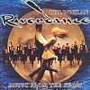

Celtic Lyrics Corner > Shows > Riverdance > The Heart's Cry
|  | The Heart's Cry |
| Credits : | Bill Whelan |
| Appears On : | Riverdance (soundtrack); Riverdance On Broadway (soundtrack) |
| Language : | English |
Lyrics :
Where the river foams and surges to the sea
Silver figures rise to find me
Wise and as daring, following the heart's cry
I am that deep pool, I am that dark spring
Warm with a mystery I may reveal to you
In time
Time holds the heart's key
Key to everything is love
Love makes the heart flower
Flower into a deep desire
Passion in the heart's fire
Passion and desire
See the eagle rise above the open plain
Golden in the morning air
Weaving and soaring, watchful and protecting
I am your shelter, I will enfold you
Warm with a mystery I may reveal to you
In time
Time holds the heart's key
Key to everything is love
Love makes the heart flower
Flower into a deep desire
Passion in the heart's fire
Passion and desire